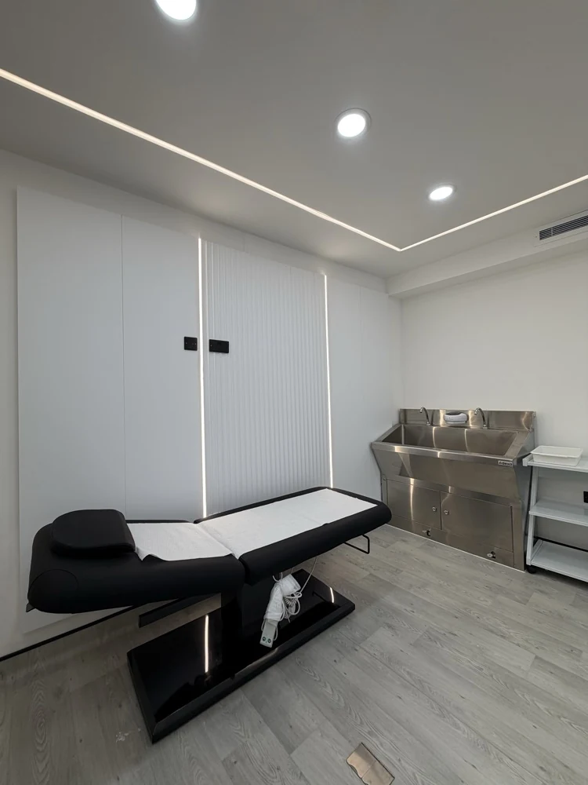

PRP
Platelet-rich plasma science, patient selection, preparation principles and treatment-planning considerations.
Explore PRP, PRF and exosome science with patient selection, treatment planning, safety and professional scope at the centre of the programme.
Next date confirmed on enquiry

Platelet-rich plasma science, patient selection, preparation principles and treatment-planning considerations.
Platelet-rich fibrin principles, how PRF differs from PRP and where the treatment concepts diverge.
Evidence, product evaluation and theory. Practical exosome administration is not promised unless an exact product and approved protocol are confirmed.
Consultation, consent, contraindications, infection prevention, complications awareness, documentation and aftercare.
The exact duration, date, entry requirements, practical scope, assessment and certificate arrangements are confirmed before enrolment.
Tell us your background and goals. We will confirm eligibility, dates, delivery format and the next step.